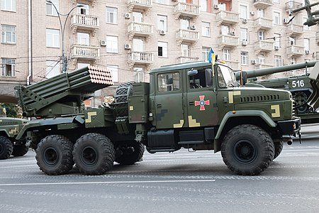

РСЗВ "Верба"
РСЗВ "Верба"
«Верба» оснащена здвоєною кабіною на 5 місць, а всі системи наведення, прицілювання, перезаряджання управляються зсередини. Повна маса установки «Верба» — 20 т. Максимальна швидкість — 85 км/год. У порівнянні з БМ-21 «Град», скорочено час перезарядки: БМ-21 «Град» перезаряджається після повного запуску від години до двох, залежно від кваліфікації екіпажу, а в РСЗВ «Верба» перезарядження повного комплекту 40 ракет робиться протягом 10 хвилин.
У порівнянні з базовою БМ-21, «Верба» отримала такі зміни:
- Швидкість перезарядження зросла в 7 разів;
- Сучасні системи навігації скоротили час для відкриття вогню по цілі на незнайомій місцевості в 4 рази, в порівнянні з «Градом»;
- Перехід на шасі від «КрАЗа» дозволив не тільки виключити використання російських «Уралів», але й підвищити прохідність машини;
- Нова система вирівнювання i стабілізації платформи, завдяки чому вдалося значно підвищити точність вогню;
- Змінена система зв'язку, тепер вся інформація передається по цифрових каналах в зашифрованому вигляді.